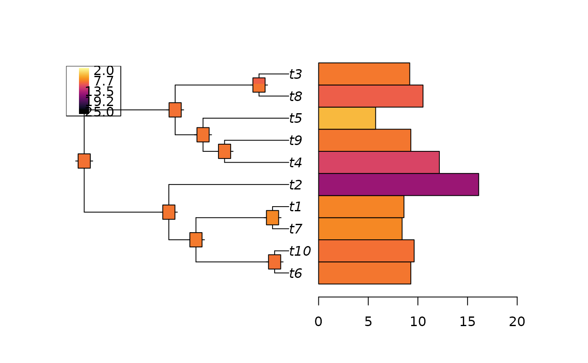

Compute the posterior density of a node value under a fitted Cauchy process on a phylogenetic tree.
ancestral(x, ...)
# S3 method for cauphylm
ancestral(x, node, values, n_values = 100, n_cores = 1, ...)
# S3 method for cauphyfit
ancestral(x, node, values, n_values = 100, n_cores = 1, ...)other arguments to be passed to the method.
the vector of nodes for which to compute the posterior density. If not specified, the reconstruction is done on all the nodes.
the vector of values where the density should be computed.
If not specified, the reconstruction is done for a grid of n_values values
between 1.5 * min(x$y) and 1.5 * max(x$y).
the number of point for the grid of values.
Default to 100. Ignored if values is provided.
number of cores for the parallelization. Default to 1.
an object of S3 class ancestralCauchy,
which is a matrix of posterior values, with nodes in rows and values in columns.
This function assumes a Cauchy Process on the tree with fitted parameters
(see fitCauchy),
and computes the posterior ancestral density of internal nodes,
conditionally on the vector of tip values.
It computes the posterior density on all the points in values,
that should be refined enough to get a good idea of the density curve.
Bastide, P. and Didier, G. 2023. The Cauchy Process on Phylogenies: a Tractable Model for Pulsed Evolution. Systematic Biology. doi:10.1093/sysbio/syad053.
set.seed(1289)
# Simulate tree and data
phy <- ape::rphylo(10, 0.1, 0)
dat <- rTraitCauchy(n = 1, phy = phy, model = "cauchy",
parameters = list(root.value = 10, disp = 0.1))
# Fit the data
fit <- fitCauchy(phy, dat, model = "cauchy", method = "reml")
# Reconstruct the ancestral nodes
anc <- ancestral(fit)
plot_asr(fit, anc = anc, offset = 3)

plot(anc, type = "l", node = c(11, 17))
# Refine grid for node 12 and 17
anc2 <- ancestral(fit, node = c(12, 17), n_values = 1000)
plot(anc2, type = "l")
# Find HDI
library(HDInterval)
hdi_anc <- hdi(anc2)
hdi_anc
#> $`12`
#> begin end
#> [1,] 6.711216 13.83631
#> attr(,"credMass")
#> [1] 0.95
#> attr(,"height")
#> [1] 0.01594822
#>
#> $`17`
#> begin end
#> [1,] 8.588486 11.04174
#> attr(,"credMass")
#> [1] 0.95
#> attr(,"height")
#> [1] 0.07555742
#>
plot(anc2, interval = hdi_anc, type = "l")